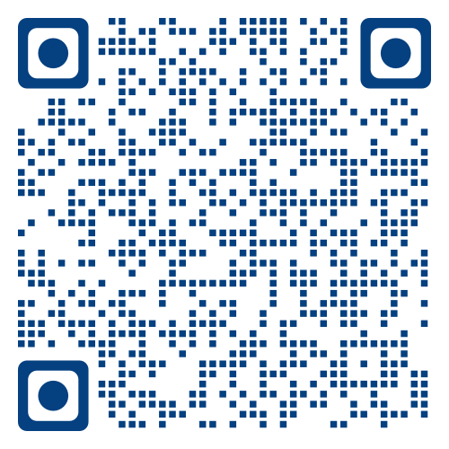

AI 助我立
北京皮村同心友好空间，2024 年 3 月 - 6 月

链接：https://yishuai.github.io/talk/ai-self/self.html
简介
皮村同心友好空间是服务于打工人及其子女的空间。该空间为打工人及其子女提供了很好的社区支持空间，包括游乐、教育、创业。
本课程为空间的打工人及其家属、子女，提供最先进的、具有国际水准的 AI 教育，支持她们的成长、学习和创业。
目标与方法
通过和 AI 交互，孩子们能够：
- 发现自己
- 认识世界
- 自我管理
- 社会意识
- 团队合作
- 建立相互之间的连接
内容
-
自我意识
- 理解和管理情绪
- 个性：开放、尽责、外向、宜人、神经质
- 认知重构：识别消极、不正确的思维方式，走出不安
- 情绪反思：孩子、妈妈
-
自我管理
- 规划/目标设定、记录进展、复盘、调整和反思
- 习惯养成：做笔记、做作业
- 计划：考试周、详细到小时的学习计划，论文写作计划
-
事前剖析
- 魔鬼代言人
- 查理芒格：知道你会死在哪里
- 唱反调的队友：有没有另外的方法？
- 团队事前风险剖析和失败避免：事前诸葛亮
-
反思复盘
- 反思经历、获得经验
- 设计反思问题：课程反思
- 日记反思：情绪、经历、活动
- 跟进：询问建议、解释、示例，帮助改进
- 成为专家
- 考试复盘：困难、反思课上、课下、练习、和同学讨论）、建议
- 反思个人经历：反思练习
- 反思团队经历：回顾、反思、举例、开放讨论、困难和疑惑
- 团队行动后反思：发生了什么，为什么会发生，改进
-
社会意识
- 同理心：理解并共感他人感受、情感和处境
- 社会意识、关系技巧、负责任的决策
- 同学之间的同理心：宿舍、学术讨论、团队合作
- PUA 抬杠 vs 同理心
-
容纳矛盾
- 悖论心态：一种思维模式
- 认识、理解、接受：存在看似相互矛盾的概念、信念或价值观
- 接受生活中存在的矛盾和复杂性，不简化事物为单一的解释
- 悖论心态的培养话题：一般、儿童、大学生
- 理解和尊重不同社会观点：课堂活动，设计案例
-
团队合作
- 团队成员互相了解
- 制定团队章程：目标、角色、行为规范
- 成为专家：团队合作模拟仿真
- AI 模拟现实团队合作场景，演示合作解决问题
- 产品设计的甲方和乙方：反馈和修改
- 两位意见分歧的杂志编辑：主编协调
- 两位科学家解决分歧：妥协、实验、研究、基于证据、咨询、讨论
-
角色扮演
- 足球队长和队员之间的冲突解决
- 为教师创建特定主题的角色扮演模拟，如谈判、招聘、推销
- 设计并进行模拟：谈判策略、技巧
-
独立思考
- 苏格拉底方法
- 提问和引导：鼓励质疑、评估证据、考虑替代观点、独立发现答案
- 开放、尊重、倾听
- 成长心态